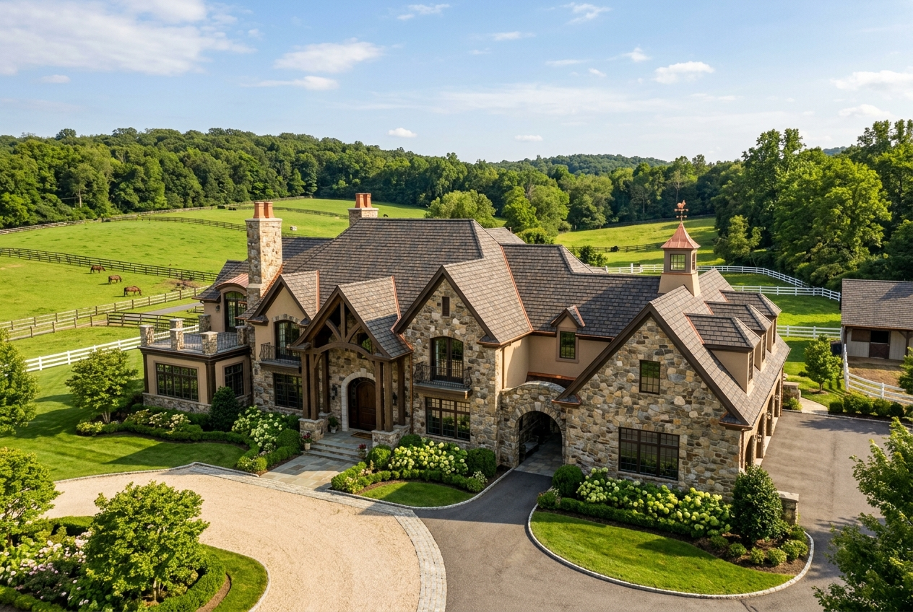

Precision Roof Repair
Targeted repair of wind-lifted shingles, valley flashing leaks, deteriorated pipe collars, and dormer transitions throughout Bedminster.
Explore Roof RepairBridgewater Roofer delivers master architectural shingle replacements, copper valley fabrication, leak repairs, and HOA-compliant re-roofing across Bedminster Township, The Hills, and Somerset Hills equestrian estates.

Whether remediating pasture wind lift, addressing ice dam backups on deep eaves, or scheduling an HOA-compliant shingle replacement, our local crews provide prompt diagnostics.
Bedminster Township represents one of New Jersey’s most distinctive landscapes, celebrated for rolling equestrian estates, historic country manors in Pluckemin and Pottersville, and the master-planned residential enclaves of The Hills. The township's homes encompass wide structural diversity—from sprawling country manors with custom standing-seam copper valleys, multi-pitch gables, and heavy slate profiles to townhomes and single-families governed by meticulous homeowner association architectural review guidelines.
Bedminster’s geography and elevation create severe exposure patterns. Elevated Somerset Hills terrain produces freezing winter night temperatures that accelerate ice dam formations along uninsulated eave overhangs. Open pasture corridors generate high-velocity crosswinds that test shingle seal strips, while multi-acre wooded parcels deposit heavy pine needle and leaf debris into roof valleys, promoting moisture retention and premature felt deterioration.
Bridgewater Roofer delivers specialized solutions tailored to Bedminster’s demanding standards. Whether providing precise HOA architectural submittal packages for homeowners in The Hills, restoring aging masonry chimney counter flashing, or installing 50-year designer laminate systems on multi-acre estates, our certified craftsmen ensure lasting weather resistance and flawless curb appeal.
From precision leak diagnostics to full architectural roof replacements, we deliver certified Somerset County craftsmanship.
Targeted repair of wind-lifted shingles, valley flashing leaks, deteriorated pipe collars, and dormer transitions throughout Bedminster.
Explore Roof RepairComplete tear-off and installation of high-definition designer architectural shingles, heavy-gauge synthetic underlayment, and ridge ventilation systems.
Explore Roof ReplacementSystematic moisture tracing around complex stone chimneys, recessed dormers, and multi-tier valleys before interior water damage worsens.
Explore Leak RepairImmediate structural tarping, temporary leak containment, and fallen tree branch hazard mitigation following severe nor’easters and pasture wind squalls.
Emergency Roofing ServicesCustom-soldered copper valleys, chimney step flashing, dead valley pans, and lead-coated flashing crafted for historic Bedminster homes.
Flashing SolutionsPremium systems including CertainTeed Grand Manor, GAF Camelot, synthetic slate, and cedar-look composites tailored to equestrian estates.
Residential SystemsLow-slope single-ply TPO, durable EPDM rubber, and standing-seam metal for horse barns, carriage houses, and corporate offices along Route 206.
Commercial RoofingThorough 25-point visual inspections, attic insulation moisture evaluations, and photographic reports for home buyers and insurance.
Schedule InspectionSteep pitches, open pasture winds, and winter freezes create specific stress points. Select any component below to view the diagnostic profile.
Bedminster estate homes channel thousands of gallons of rainwater into deep intersecting valleys. Corroded valley metal or split underlayment triggers hidden ceiling drips.
Installing soldered 16-oz copper or heavy aluminum open valley liners over double-layer ice & water shields.
Open pastures, rolling hills, and rural winter freezes demand robust, multi-layer roofing systems.
Heavy spring rain systems test valley carrying capacity and expose hairline fissures in aging masonry chimney mortar.
Summer sun bakes unshaded roof planes up to 150°F, testing asphalt oils, while sudden thunderstorms bring high localized wind gusts.
Dense oak and maple foliage blankets valleys and roof dead-ends. Damp organic mats promote shingle rot and harbor destructive moss colonies.
Elevation creates colder conditions than lowlands. Snow melt refreezes at eaves, generating heavy ice dams that force water under standard shingles.
From premier equestrian estates to planned developments in The Hills, we bring specialized expertise.
Expansive residences requiring designer architectural shingles, custom copper valleys, and multi-tier flashing craftsmanship.
Townhomes and single-families adhering to strict HOA color schedules, uniform architectural guidelines, and synchronized staging.
18th and 19th-century farmhouses and colonials requiring historical sensitivity, copper flashing accents, and slate profiles.
Flat single-ply TPO/EPDM membranes for corporate centers, medical offices, and equestrian barns along Route 206 and Route 202.
We provide straightforward recommendations based on shingle age, granule adhesion, and underlying decking health.
Recommended when shingle matting remains pliable and problems are strictly localized.
Necessary when the shingle mat has dried out or multiple structural leaks have developed.
From seamless municipal permitting to thorough cleanup, our 8-step process guarantees stress-free execution.
Responsive phone intake to understand your roof concern, timeline, and property specifics.
In-depth roof surface survey, attic inspection, flashing evaluation, and photographic documentation.
Detailed written proposal with exact material options, clear milestones, and competitive pricing.
Complete permit management with Bedminster Township (1 Miller Lane) and HOA documentation.
Shielding delicate landscaping, shrubbery, driveways, and stone patios with heavy protective tarps.
Complete tear-off, decking re-nailing, ice & water barrier installation, and certified shingling.
Repeated magnetic sweeps of all lawn, flowerbed, and driveway areas to capture all stray fasteners.
Comprehensive final walkthrough, quality sign-off, and delivery of registered warranty documentation.
In Bedminster Township, residential roof replacements and structural decking modifications require a construction permit issued by the Bedminster Township Construction Office located at 1 Miller Lane, Bedminster, NJ 07921. Under the New Jersey Uniform Construction Code (UCC), self-adhering ice barrier membranes must extend at least 24 inches past the interior wall line, and all installed systems must meet municipal wind-resistance mandates.
Bridgewater Roofer manages all permit submissions, technical documentation, and municipal inspections on your behalf, guaranteeing complete code compliance and peace of mind.
We believe in complete pricing transparency. Every proposal is calculated based on exact physical characteristics of your roof.
High square footage and steep pitches necessitate specialized staging, harness systems, and additional labor.
Dormers, intersecting valley junctions, masonry chimneys, and skylight curbs require detailed custom metal work and waterproofing.
From standard architectural shingles to heavy-duty designer laminate shingles (CertainTeed Landmark Pro, GAF Camelot), material choices shape longevity and cost.
Any rotted or weakened plywood decking discovered after stripping old layers must be replaced to ensure manufacturer warranty validity.
Get a precise, itemized estimate customized for your Bedminster home.
Call (908) 465-9944 for an Itemized EstimateLocal accountability, certified master craftsmen, and ironclad manufacturer warranties make us the preferred Somerset County roofer.
Minutes away in Bridgewater, ensuring rapid dispatch for emergency leaks and seamless project management.
Active New Jersey Home Improvement Contractor licensing and comprehensive workers' compensation and general liability coverage.
Certified installation techniques unlock complete non-prorated manufacturer warranty protection on new roofing systems.
We treat your lawn, flowerbeds, and driveways as our own, conducting multi-pass magnetic sweeps to eliminate stray nails.
Real experiences from homeowners throughout our central New Jersey service region.
"Living in The Hills in Bedminster, our HOA has strict architectural requirements. Bridgewater Roofer supplied all the exact color submittals, got quick approval, and installed a beautiful roof in one day. Exemplary service."
"We had a stubborn leak on our carriage barn in Pottersville that another roofer couldn't fix. They identified a cracked copper pan in the dead valley and fabricated a custom replacement. Completely dry ever since."
"Transparent pricing, polite crew, and fantastic communication from start to finish. They handled the Bedminster township permit and the final inspection passed immediately. Highly recommended."
Our crews provide prompt dispatch throughout Somerset County and neighboring Somerset Hills townships.
Central headquarters and main staging yard providing rapid dispatch for residential and commercial roofing.
Bridgewater Roofing HubDirectly east in Bernards Township, offering historic preservation roofing and executive colonial replacements.
View Basking Ridge ServicesNeighboring township directly south along the US-202 corridor with extensive suburban colonials and ranches.
View Branchburg ServicesWatchung ridge community to the east, featuring custom luxury estates and multi-tier architectural roofs.
View Warren ServicesHistoric borough along the Raritan River featuring compact residential streets and storm repairs.
View Raritan ServicesSomerset County seat with historic Victorians, mixed residential properties, and downtown commercial roofs.
View Somerville ServicesCommon questions regarding roof repairs, HOA rules, permits, and costs in Bedminster Township.
Yes. Bridgewater Roofer provides comprehensive residential and commercial roof repairs throughout Bedminster (ZIP 07921), Pluckemin, and Pottersville. We fix leaking chimneys, pipe boots, valley leaks, missing shingles, and storm damage with prompt dispatch.
Yes. A construction permit from the Bedminster Township Construction Office (1 Miller Lane, Bedminster) is required for re-roofing projects. Bridgewater Roofer prepares and files all necessary municipal paperwork and coordinates township inspections.
Yes. We routinely assist homeowners in The Hills with required architectural submittals, shingle color sample boards, and certificates of insurance to ensure all work meets neighborhood association covenants.
Yes. We have specialized experience with large country estates, carriage houses, equestrian barns, and historic farmsteads, installing custom standing-seam copper, designer laminate shingles, and durable commercial membranes.
Due to the colder elevation of the Somerset Hills, we install self-adhering waterproof ice and water barrier membranes extending 6 feet up eaves (well beyond the 24-inch code minimum) along with balanced ridge and soffit ventilation to keep roof decks cold and prevent snowmelt runoff.
Because our operations are based right next door in Bridgewater, we offer rapid same-day emergency tarping and temporary leak containment following severe windstorms, nor'easters, or tree strikes.
Most residential roof replacements in Bedminster are completed within 1 to 2 business days. Our large, experienced crews ensure projects progress quickly without compromising quality or safety.
We treat every Bedminster property with total care. Before tear-off, we erect reinforced tarps and plywood shielding over flower beds, shrubs, and ornamental plants. Dump trailers are placed on protective wood boards to shield pavers and driveways, followed by rigorous magnetic sweeps for fasteners.
Professional insights on roof longevity, HOA planning, and cost factors.
A comprehensive review of what influences residential roof costs throughout Somerset County, New Jersey.
Read Cost GuideTips for seamless architectural review board approvals, shingle color matching, and contractor compliance.
Explore HOA TipsWhy soldered copper valleys, drip edges, and chimney counter-flashing offer superior 50+ year longevity.
Learn About CopperFrom historic village restorations to modern executive roof replacements, our local Bridgewater team provides honest inspections and dependable warranties.